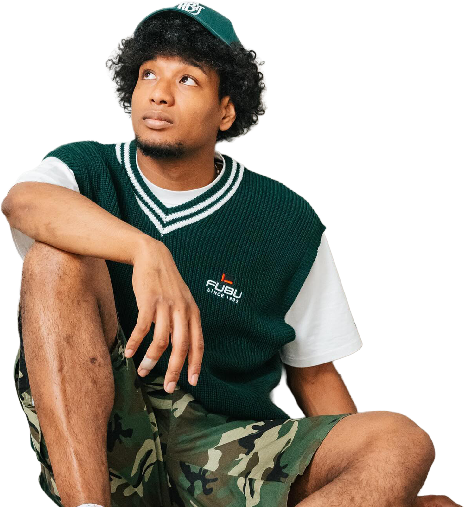
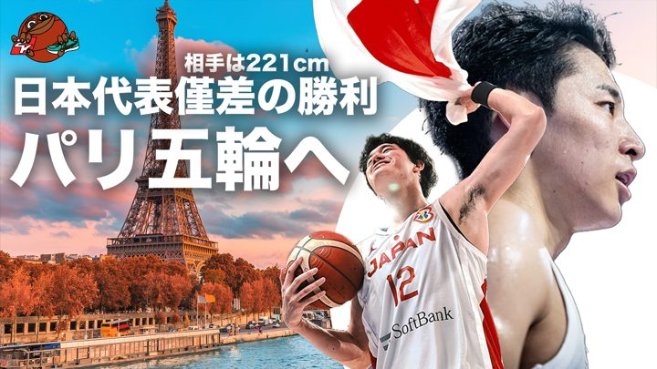
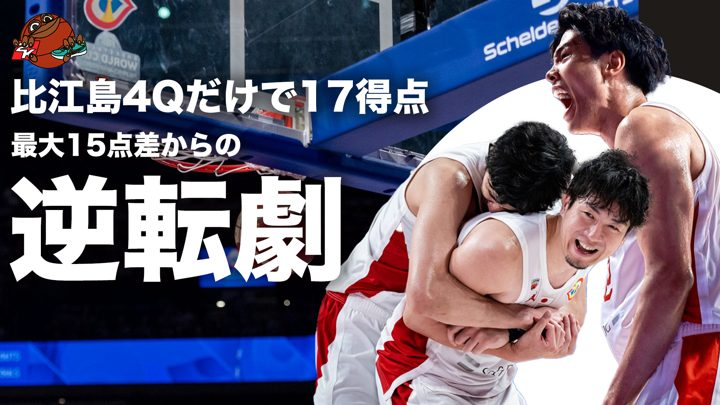
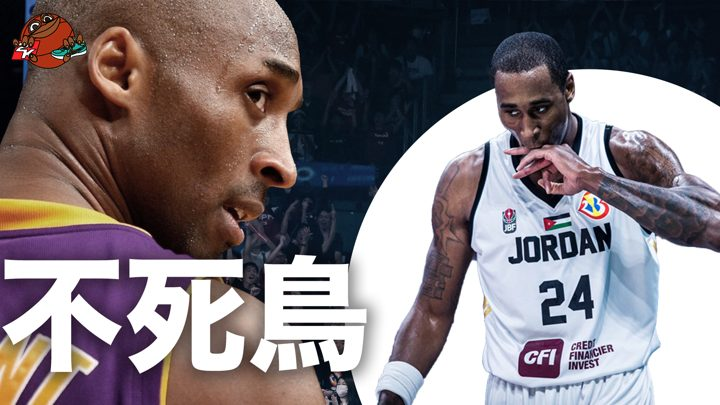
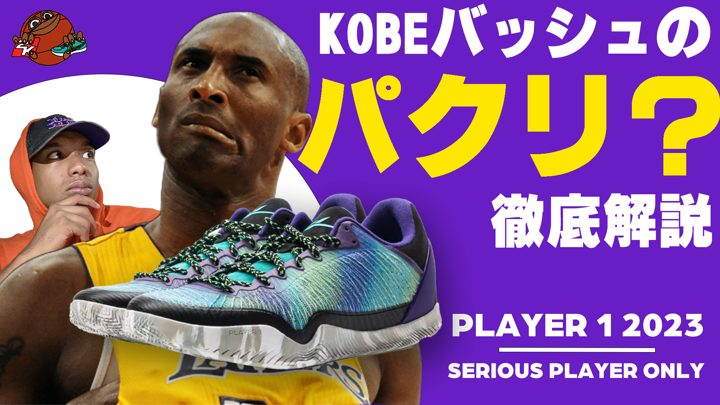
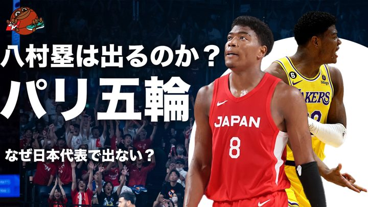

NBAとバスケの「今」を、毎日届ける動画メディア。試合の熱が冷めないうちに、見どころと物語を最速で言葉にする。
NBAの試合・選手の「今」を、テンポのいい語りで毎日発信。3プラットフォームに最適化して届ける。
選手のキャリアと物語を深掘りするドキュメンタリー型の解説。数字の裏にあるドラマまで描く。
アリーナ、イベント、ストリート。画面の外で起きているバスケの熱を、現場から記録する。

日本代表、パリ五輪へ —— 大一番を語る
最大15点差からの逆転劇を振り返る
「不死鳥」—— 選手の物語を深掘り
バッシュを徹底解説するシューズ企画
代表の「なぜ」に切り込む考察回→ すべてのコンテンツは YouTubeチャンネル で公開中。